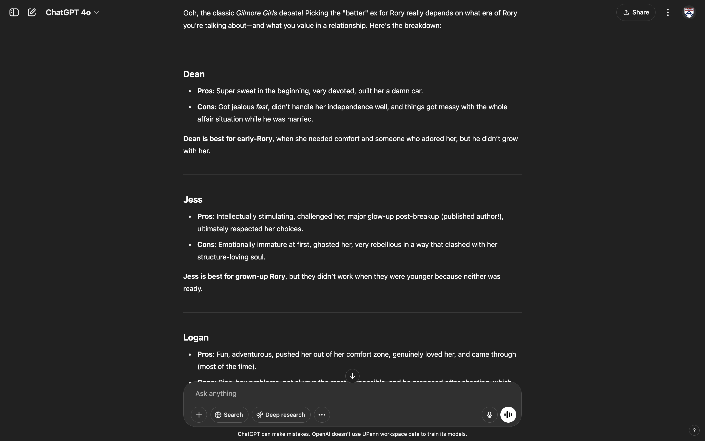

Deep Research

Deep Research seems self explanatory. When I first saw it, I was hesitant to use it. I didn’t think it would be to different from the regular chatbox function. I asked ChatGPT what it was and here is what it gave me:
OpenAI’s Deep Research is an advanced feature within ChatGPT, launched in February 2025, designed to perform comprehensive, multi-step research tasks by autonomously browsing the web and analyzing information from various sources. This tool aims to deliver detailed, source-backed reports on complex topics, functioning similarly to a human research analyst .
What Is Deep Research? Deep Research is an AI agent integrated into ChatGPT that conducts in-depth investigations on user-specified topics. It autonomously searches the internet, interprets and analyzes text, images, and PDFs, and compiles structured reports with citations. The process typically takes between 5 to 30 minutes, depending on the complexity of the query .
How It Works Initiation: Users select the “Deep Research” option in ChatGPT and enter their query.
Clarification: The AI may ask follow-up questions to better understand the user’s intent.
Research Process: The agent autonomously browses the web, evaluates sources, and gathers relevant information.Report Generation: After analyzing the collected data, it generates a comprehensive report, including citations and summaries of the steps taken
Key Features Autonomous Web Browsing: Deep Research can independently navigate the internet to gather information.
Multi-Modal Analysis: It interprets and analyzes various data types, including text, images, and PDFs.
Structured Reporting: The tool compiles findings into organized reports with clear citations.
Process Transparency: Users can view a summary of the research steps and sources consulted during the process .
Performance and Evaluation In evaluations, Deep Research achieved a 26.6% score on “Humanity’s Last Exam,” a benchmark assessing AI performance across various academic fields. This score surpasses that of other models, indicating its advanced reasoning and research capabilities .
Access and Availability Deep Research is available to users subscribed to ChatGPT’s paid tiers
Limitations While Deep Research offers advanced capabilities, users should be aware of potential limitations:
Source Reliability: The tool may occasionally rely on less authoritative sources, such as Wikipedia, which can affect the accuracy of the information .
Understanding Nuance: It may struggle with interpreting nuanced or ambiguous queries, leading to less precise results.
Transparency of Uncertainty: The AI might not always effectively communicate the uncertainty or confidence level of its findings
Ideal Use Cases Deep Research is particularly useful for tasks requiring comprehensive information gathering and analysis, such as:
Academic Research: Compiling literature reviews or exploring complex theories.
Market Analysis: Gathering data on industry trends or competitor strategies.
Policy Evaluation: Assessing the impacts of legislative changes or public policies.
I want to see how much it knows about certain topics. I want it to help me write a persuasive paper. Those types of paper, in my opinion, are harder to write because you have to look at the topic at all angles. Let’s debate a hard topic today.
Let’s get started!
Gilmore Girls Example : Who was the Better Ex?
If you’re a Gilmore Girls fan, you know that this is a big topic up for debate. I chose this question because :
- I am a huge Gilmore Girls fan. I think I rewatched it at least 4 times over.
- This is a very subjective question, so I believe it will be a hard question to try and answer. Nonetheless, there’s a bunch of media on this topic.
- I am wondering what type of media Deep Search will pull from; will it read into Reddit? I have a feeling that this would be one of the most helpful resource because people debate a lot on this site.
My prompt will be:
In the TV show, Gilmore Girls, who was the better ex for Rory?
Let’s take a look….
Deep Research seems to be aware that the question I asked is a pretty subjective question. I like how it asks me what I mean by “best ex”. I also like how it considers any other potential guys Rory was talking to- we only really focus on Dean, Jess, and Logan but Deep Search is aware that others have talked to her. Good job for now. I’m waiting for the research to be completed.
While I’m waiting for Deep Search to load (it’s taking so long), I’ll do a simple search of the same prompt in the regular ChatGPT 4o. This will make it easier to figure out whether the Deep Search does a better job.
ChatGPT 4o Response to the Question

I like it short and simple. It gave me the answer in a quick manner, and I’m satisfied… well not really with the verdict but the speed of the response. I’m a big Logan girl at heart.
As I’m writing this, I’m still waiting for the Deep Search to finish.
Deep Search Response (it’s a pretty long one)
I’m not going to show you images because I’m pretty sure the response will make you scroll for at least 10 minutes, so here’s a drop down of the response. Here’s it below:
Who Was Rory Gilmore’s Best Match? (Dean vs. Jess vs. Logan)
Gilmore Girls fans have fiercely debated whether Dean, Jess, or Logan was the best boyfriend for Rory Gilmore. Each relationship had its highs and lows, and each romance shaped Rory in different ways. In this analysis, we’ll evaluate all three of Rory’s major ex-boyfriends across key dimensions: emotional support and treatment of Rory, influence on her personal growth, compatibility in values and communication, on-screen chemistry, and fan/critical reception. Let’s break down Rory’s relationships with Dean Forester, Jess Mariano, and Logan Huntzberger, then compare who emerges as the best overall match. Dean Forester – The First Love Emotional Support & Treatment: Dean was Rory’s first love and initially the picture of a devoted boyfriend. He was warm, protective, and eager to make Rory happy – famously building her a car as a gift for their three-month anniversary theeverygirl.com . He integrated into her life easily (even joining her for movie nights with Lorelai) and was the only boyfriend that Rory’s mom ever truly bonded with – Lorelai even once called Dean “the perfect boyfriend” theeverygirl.com . Dean consistently tried to be there for Rory, whether it meant finding a double-date for her friend Lane or suffering through Friday Night Dinners with her grandparents to support her theeverygirl.com . However, Dean’s supportive nature had a flipside: as Rory became more independent, he grew insecure and jealous. In Season 1’s “Star-Crossed Lovers and Other Strangers,” Dean tells Rory “I love you” and impulsively breaks up with her when she doesn’t say it back – an overreaction that revealed his need for reassurance. By Season 3, as Rory’s world expanded, Dean’s insecurity manifested as possessiveness (for example, lashing out at Jess during the 24-hour dance marathon) warhawknews.com . His frustration boils over in “They Shoot Gilmores, Don’t They?” when he publicly ends their relationship at the dance rather than watch Rory’s attention drift to Jess gilmoregirls.fandom.com . In his final stretch on the show, Dean made his worst mistake – cheating on his wife Lindsay with Rory in Season 4. This affair tarnished Dean’s “good guy” image for many viewers vanityfair.com . As Vanity Fair dryly noted, Dean started as an archetypal sweet first love but “then he got all possessive and jealous… And then our golden boy blew any claim he had to his ‘good guy’ label by cheating on his wife with Rory” vanityfair.com . In short, Dean treated Rory with kindness and respect in the beginning, but he struggled to handle her growth, leading to controlling behavior and regrettable choices later. Personal Growth and Influence: As Rory’s first serious relationship, Dean taught her important lessons about love and heartbreak. With Dean, Rory experienced a “safe” and steady kind of love – something she openly appreciated later in life. In fact, years afterward Rory reflects that Dean was “the greatest boyfriend alive” for a time and that he “taught me what safe feels like” theeverygirl.com . His emotional stability gave Rory a secure space to open up romantically theeverygirl.com . However, Dean did not challenge Rory’s ambitions or push her out of her comfort zone. In many ways, he represented the life Rory could have had if she stayed in Stars Hollow and settled down young (much like Lorelai’s path not taken) pajiba.com pajiba.com . As one commentary put it, “Dean is the tempting threat of the future Rory could have fallen into… the easy way out… giving up on ambition” pajiba.com . Indeed, once Rory went off to Yale, Dean began to feel like he was holding her back. Their Season 5 reunion was short-lived because Dean keenly sensed Rory’s world had grown bigger than his. In “The Party’s Over” (Season 5, Ep. 8), Richard and Emily’s high-society party makes painfully clear that Dean doesn’t fit into Rory’s Yale life; that night, he breaks up with her for the final time, admitting their paths are diverging gilmoregirls.fandom.com . To Dean’s credit, even after breaking up, he genuinely wanted Rory to succeed – encouraging her to focus on Yale when he realized he couldn’t be part of that journey. In summary, Dean gave Rory a gentle introduction to love and a feeling of security, but he ultimately did little to spur her personal growth. If anything, Rory outgrew him as she matured. Compatibility (Values, Goals, Communication): Early on, Dean and Rory shared a wholesome, small-town compatibility. They valued loyalty, family, and honesty. Dean was straightforward about his feelings (perhaps too much so at times), and he usually communicated openly – he even plainly told Rory when he felt neglected as she got busier, rather than hiding his frustration. His willingness to communicate (like the “I love you” moment) showed emotional honesty, but also a lack of patience for Rory’s slower emotional pace theeverygirl.com . In terms of life goals, however, Dean’s and Rory’s trajectories ultimately split. Dean was content with the simple Stars Hollow life: he wasn’t academically driven and contemplated early marriage and trade work. Rory, on the other hand, had Ivy League dreams and career aspirations in journalism. Dean did try to accommodate Rory’s world – he went to a Chilton formal dance despite being out of place, and gamely met her grandparents – but as Rory’s ambitions took flight, Dean’s traditional, hometown-oriented outlook no longer matched hers theeverygirl.com warhawknews.com . By the time Rory was at Yale, Dean admitted that Rory’s education and future were higher priorities for her than their relationship, and he couldn’t fault her for that. Their communication remained civil (they even stayed friends after breaking up), but their values and goals were no longer aligned. In short, Dean was compatible with “early Rory” – the shy bookworm who hadn’t yet left Stars Hollow – but not with the Rory who craved broader experiences. Chemistry and Screen Presence: Rory and Dean’s chemistry was sweet and sincere. As high-school sweethearts, they shared many heartwarming moments (their first kiss at Doose’s Market, movie nights, school dances) that felt authentic to teen first love. Their on-screen dynamic was comfortable and affectionate. However, compared to the more fiery, banter-filled chemistry Rory would have with Jess and Logan, Rory and Dean’s interaction could seem a bit understated. In later seasons, some critics found Dean’s presence “bland” once the initial romance fizzled. The Tab’s ranking of Rory’s love interests described Dean at series’ end as “a lost puppy… a spineless young man” archive.thetab.com – harsh words that underscore how little excitement or spark remained in his storyline. Still, many fans have a soft spot for the innocent charm of Rory and Dean’s early relationship. Their chemistry wasn’t as passionate or volatile as her later romances, but it conveyed a gentle, first-love warmth that set a baseline for Rory’s romantic expectations. Fan and Critical Reception: Over the years, Dean has often ranked lowest of Rory’s three main boyfriends in fan polls and retrospectives brit.co . While viewers generally agree he was an excellent first boyfriend, many soured on him after his jealous outbursts and the cheating incident. As Vanity Fair noted, by the end “suddenly we’re feeling pretty tepid on Dean” vanityfair.com . That said, Dean isn’t without defenders. Some argue that from an adult perspective, Dean’s stable, caring nature was exactly what Rory needed. In the 2016 “A Year in the Life” revival, Rory herself gives Dean closure by thanking him for how safe and loved he made her feel theeverygirl.com . Modern reappraisals (like a piece in The Everygirl) even contend that “Dean’s kindness, dependability, and support made him an ideal partner” and an important benchmark for Rory’s later relationships theeverygirl.com . Nonetheless, in the grand scheme, both fans and critics tend to see Dean as the guy Rory outgrew. Show creator Amy Sherman-Palladino has implied Dean’s role was to be that essential first love in Rory’s development – but not her final partner hellogiggles.com pajiba.com . In fan discussions, “Team Dean” is a quieter minority compared to the passionate “Team Jess” or “Team Logan” camps. To sum up, Dean is fondly remembered for who he was at the start (loyal, loving, and safe), but his latter mistakes and limited compatibility with Rory’s evolved self keep him from being the top choice for her ultimate match. Jess Mariano – The Intellectual Wildcard Emotional Support & Treatment: Jess and Rory’s relationship was equal parts exhilaration and frustration. As Luke’s brooding, bookish nephew, Jess offered Rory a magnetic connection that was very different from Dean’s doting affection. With his quick wit and shared love of literature, Jess understood Rory’s inner world in a way that Dean didn’t. However, during their actual dating period in high school, Jess was often a poor partner in terms of emotional support. He could be inconsiderate and aloof – for instance, he wouldn’t call for long stretches, then show up expecting Rory’s time (behaviors that even Rory admitted were hurtful) archive.thetab.com . He also kept Rory at arm’s length emotionally; Jess rarely expressed vulnerability and often met conflict with sarcasm or anger. Notable low points include Jess lying to Rory about his situation (like hiding that he wasn’t going to graduate high school) archive.thetab.com , and one instance of Jess pressuring Rory to go further physically than she wanted (an incident that led to a fight) archive.thetab.com . At times, Jess’s angst and pride meant he wouldn’t ask for help or comfort even when he clearly needed it, which left Rory shut out. Their first breakup was particularly upsetting: after Jess’s troubles at school peaked, he left town without even saying goodbye to Rory in Season 3’s finale. This abrupt disappearance was devastating for her, and undeniably a failure on Jess’s part to treat Rory with the respect she deserved. Simply put, teenaged Jess was not the most considerate boyfriend – he was moody, impulsive, and often failed to be there for Rory in the way she needed archive.thetab.com . That said, Jess’s character arc after their breakup showed significant growth. When he re-enters Rory’s life in later seasons, a more mature Jess proves himself capable of the emotional support he couldn’t provide before. A turning point comes in Season 6’s “Let Me Hear Your Balalaikas Ringing Out,” when Jess finds Rory adrift (having dropped out of Yale and floundering). In a passionate confrontation outside a pub, Jess pointedly tells her “This isn’t you, Rory, you know it isn’t!” gilmoregirls.fandom.com – calling her out for losing sight of her goals. He refuses to accept her excuses, effectively shaking Rory out of her rut. His blunt honesty (born from genuine care for the “old Rory” he knew) is exactly what Rory needs to hear. In fact, Jess’s words in that episode are instrumental in Rory’s return to Yale gilmoregirls.fandom.com . Here we see Jess as a supportive force, encouraging Rory to course-correct her life, even though they aren’t even together romantically. He also treats her with more maturity and respect in this phase – congratulating her on her successes and not pushing any selfish agenda. By the time of the 2016 revival, Jess has grown into a reliable friend and confidant for Rory. So, evaluating Jess’s treatment of Rory is a tale of two eras: during their teen romance, he often hurt and disappointed her (despite loving her deeply), but as an adult, he became one of the few people who tell Rory the truth and push her to be her best self warhawknews.com gilmoregirls.fandom.com . Personal Growth and Influence: If any of Rory’s boyfriends challenged her to grow, it was Jess. Sometimes that influence was positive and deliberate – other times it was an unintended consequence of their turbulent relationship. In high school, Jess represented rebellion and spontaneity for Rory. Her attraction to him nudged her out of her comfort zone: she skips school to visit Jess in New York on impulse, she stands up to her mother about dating him, and she learns to navigate a more complicated emotional landscape than the fairy-tale romance she had with Dean gilmoregirls.fandom.com gilmoregirls.fandom.com . These experiences, even when painful, taught Rory about herself (for example, realizing she could be drawn to someone who wasn’t the “perfect guy” and that she had to face the consequences of her choices). However, the truly profound impact Jess had on Rory’s growth came later. As mentioned, Jess was the catalyst for Rory regaining her direction in Season 6. He not only questioned her decisions; he also led by example – revealing that he had gotten his act together (writing and publishing a book) and thereby inspiring Rory to reconnect with her own ambition imdb.com . One review notes that “it was because of him, and only him, that Rory went back to Yale… Jess changed her life for the better, and he had by far the biggest impact of the three [boyfriends]” warhawknews.com . This might be a slightly exaggerated take by a Jess fan, but there’s truth in it: no one else succeeded in snapping Rory out of her Season 6 malaise the way Jess did. He reminded her of who she was. Additionally, Rory’s relationship with Jess (and its failures) helped her grow emotionally. She learned hard lessons about communication and trust – for instance, she eventually realized she couldn’t “fix” someone who wasn’t ready to be helped (a lesson that likely made her more cautious in later relationships). And in a bittersweet way, Jess’s evolution showed Rory what a healthy version of their relationship might look like, had timing been different. This arguably expanded Rory’s understanding of what she wants in a partner. In sum, Jess had a complex but significant influence on Rory’s personal growth: he introduced her to new experiences (both good and bad) and, in the end, played a pivotal role in pushing her back toward her best self gilmoregirls.fandom.com . Compatibility (Values, Goals, Communication): Rory and Jess were intellectually compatible from day one. They bonded over books, music, and a shared sharp sense of humor. Jess arguably “got” Rory’s literary and pop culture references better than anyone else she dated. This made their conversations (when Jess was actually in the mood to converse) crackle with understanding and inside jokes. In terms of temperament and values, though, they started off quite mismatched. Rory was a rule-follower, a star student, and generally polite; Jess was an authority-challenging misfit who didn’t care about school and had a chip on his shoulder. Their communication styles clashed often in the early days – Rory wanted openness and reassurance, while Jess would clam up or deflect with snarky humor. This led to many misunderstandings and hurt feelings. Over time, Rory learned to be more direct with Jess (e.g. calling him out for his disappearing acts), and Jess learned to soften a bit. Still, during high school their fights were frequent precisely because they struggled to communicate their vulnerabilities. In terms of life goals, at 17 their trajectories were wildly different: Rory was college-bound; Jess was flunking out. That imbalance put strain on them (Jess felt insecure about not fitting into Rory’s academic world, and Rory couldn’t fully trust Jess to be responsible) gilmoregirls.fandom.com gilmoregirls.fandom.com . However, fast-forward to young adulthood, and Jess and Rory’s values/goals became much more aligned. Jess found his purpose as a writer, valuing creativity and self-improvement – values Rory shares. Both grew into independent, career-oriented people. By the time of the revival, Jess even works at a publishing house, and Rory is writing a book – their paths converged in a rather poetic way. Communication-wise, adult Jess and Rory are shown communicating honestly and kindly. For example, in “A Year in the Life,” Jess offers advice about Rory’s writing and personal life with a level of emotional maturity that teenage Jess lacked. It’s no wonder many fans speculate that in the long run, Jess and Rory would be highly compatible if they got together when the timing was right. As one fan analysis put it, by the end Jess is “practically perfect and, if anything, too good for Rory” – the implication being that his maturity might even surpass hers at that point archive.thetab.com . In conclusion, Rory and Jess always shared a deep intellectual and emotional undercurrent, but they only became truly compatible once both had grown up. In high school their values and communication were at odds, but later they seemed to sync up in values, goals, and understanding. Chemistry and Screen Presence: Few would deny that Rory and Jess had electric on-screen chemistry. From the moment they meet in Season 2, there’s a spark – the playful arguing over a book at Doose’s Market, the stolen glances at Luke’s diner – that signaled a crackling attraction. Their banter was fast and filled with subtext, and the show often framed their scenes with a romantic, tension-filled aura (rainy kisses on a bridge, anyone?). Many fans cite Rory and Jess as having the best chemistry of the series, thanks in part to the natural rapport between Alexis Bledel and Milo Ventimiglia. Whether they were trading sarcastic quips or arguing at a house party, there was an intensity to their interactions that made them exciting to watch. During the will-they-won’t-they build-up in Season 2, every scene between them feels charged. Even after their breakup, when Jess appears in later seasons, that old spark still flickers (albeit channeled into more platonic caring). Critically, their chemistry is often praised for showcasing Rory’s passionate side. With Jess, the usually composed Rory can get fiery – she’ll yell, she’ll cry, she’ll kiss him in the heat of the moment. He brings out her emotional fire. A Reddit fan discussion summed it up: “Rory connected with Jess better than any of her other boyfriends… Even moody Jess was endearing” reddit.com . Of course, chemistry isn’t everything – but it’s a big reason “Team Jess” remains so passionate. The on-screen presence of Rory/Jess was dynamic and romantic, making their scenes memorable even when the relationship itself was rocky. Fan and Critical Reception: Jess Mariano is a fan-favorite if there ever was one. Since the show’s original run, huge portions of the fandom have been firmly “Team Jess.” Viewers were drawn to his bad-boy-with-a-brain persona and the palpable chemistry discussed above. In many polls and discussions, Jess often comes out on top as Rory’s best match, or at least as the most beloved of her boyfriends. For example, in one campus survey of Gilmore Girls fans, the majority chose Jess, citing that “their personalities are most compatible and they help each other grow” oakparktalon.org . Fans frequently argue that Jess understood Rory on a deeper level and that by the end of the series (and into the revival), he was the man who had grown enough to truly deserve her. On the other hand, some viewers still criticize Jess for how he treated Rory when they dated. His flaws – running away, being cruel at times – are not forgotten. This makes Jess somewhat divisive: there’s a segment of fans who think his later redemption doesn’t erase the pain he caused Rory initially. Nonetheless, nostalgia and Milo Ventimiglia’s enduring popularity keep Jess in a positive light for many. From a critical standpoint, Jess is often seen as an important catalyst in Rory’s story, but not always the best partner during the show’s timeline. Some TV critics note that while Jess had the makings of Rory’s ideal intellectual equal, he only became that guy after their relationship ended. As The Tab’s ranking noted, “he was a pretty terrible boyfriend [to Rory]… but in later seasons Jess is a far better match for Rory due to his maturity” archive.thetab.com archive.thetab.com . There’s a sense that Jess and Rory’s timing was off, and that prevented him from being “endgame.” Even the show’s creators have hinted that Jess was “the boy that diverted [Rory’s] attention” on her path, rather than her final destination hellogiggles.com . Still, the Gilmore Girls writers clearly loved Jess’s character – he got more return appearances and a potential spinoff setup – indicating they knew how much he resonated with the audience. To this day, debates rage in forums and comment sections about Rory’s best boyfriend, and Jess is always a top contender. Many fans hold out hope (especially after the open-ended revival) that Jess might ultimately be Rory’s “Luke” (a late-in-life true partner), given how he consistently supports her in adulthood. In summary, fan reception of Jess is overwhelmingly positive regarding his connection with Rory (despite his teen misdeeds), and critics acknowledge his strong chemistry and influence on Rory, even if some stop short of crowning him the best match during the original series run. Logan Huntzberger – The College Sweetheart
Rory and Logan prepare to take a leap in “You Jump, I Jump, Jack,” symbolizing how Logan introduced Rory to adventure. In college, Logan became Rory’s partner in crime (sometimes literally) and her most serious boyfriend. Their relationship had a very different dynamic from her earlier romances – more mature in some ways, yet still filled with its own drama. Emotional Support & Treatment: Logan and Rory’s relationship evolved from a casual fling into a committed partnership, and as it did, Logan proved to be a supportive, caring boyfriend (despite a rocky start). In their early interactions at Yale, Logan is a witty playboy who doesn’t do commitment, and Rory is drawn to his charisma but wary of his reputation. When they eventually start dating seriously in Season 5, Logan initially struggles with monogamy (leading to the infamous brief breakup/miscommunication – more on that later). However, once Logan fully commits to Rory, he steps up remarkably. He is there for her during some of her toughest moments. For instance, when Rory decides to take time off from Yale after a crisis of confidence, Logan disagrees with her choice but still provides her a place to stay (his apartment) and emotional comfort during that period. He doesn’t abandon her when she’s at a low point; instead, he gives her space and support. Later, when Rory returns to Yale, Logan encourages her and is proud of her achievements. Over the course of Seasons 6 and 7, Logan shows he can be dependable: he rushes to be by Rory’s side when her grandfather is hospitalized, he tries to cheer her up after setbacks, and he makes grand gestures like organizing a last-minute trip from London just to see her archive.thetab.com . A couples therapist who analyzed Rory’s relationships summed up Rory and Logan’s dynamic well: “Rory feels safe and excited by Logan and his unpredictability, while also knowing she’s safe with him.” brit.co Logan managed to give Rory both a thrill and a safety net, a balance that neither Dean nor Jess achieved. That’s not to say Logan was a perfect angel. He had his lapses, notably the “Bridesmaids Incident” in Season 6: during a brief breakup (Rory thought they were on a break; Logan thought they’d split), Logan drowned his sorrows and slept with a few other women. When Rory found out, she was devastated and felt betrayed. Logan sincerely apologized and acknowledged his mistake oakparktalon.org archive.thetab.com . Crucially, after this hiccup, he worked to rebuild her trust and didn’t run away when things got hard. Unlike Jess, who bolted in tough times, Logan stayed and faced the conflict with Rory, demonstrating growth and commitment. Even The Tab, which ranked Logan as Rory’s best boyfriend, noted: “Unlike all the other characters, Logan admits to his faults and apologizes when necessary and does not run away when the relationship gets tough.” oakparktalon.org . Logan also always treated Rory as his equal. He respected her intellect (nicknaming her “Ace” for her aspiring reporter status) and often turned to her for advice or solace in his own struggles. He could be inconsiderate (e.g. failing to initially mention his break indiscretions), but he wasn’t intentionally cruel or dismissive toward Rory. By the end of the series, many viewers saw Rory and Logan’s romance as her healthiest relationship. One analysis observes that despite ups and downs, “even in trying moments, they consistently trust and support each other. They evolve together, cementing their relationship as Rory’s healthiest” brit.co . In summary, Logan’s treatment of Rory – after some early bumps – was marked by warmth, respect, and reliability. He delighted in her success, comforted her in distress, and treated her as a true partner. The fact that he proposed marriage in the series finale (something neither Dean nor Jess ever came close to) underscores how serious and supportive he had become about a future with Rory. Personal Growth and Influence: Logan had a significant impact on Rory’s growth, in ways both good and bad. On the positive side, Logan pushed Rory to be more adventurous and bold. From the moment he invites her to cover (and participate in) the secretive Life and Death Brigade escapades, he’s encouraging her to embrace risks and enjoy life. In “You Jump, I Jump, Jack,” he literally coaxes her to jump off a scaffold holding an umbrella – a leap of faith that becomes one of Rory’s most memorable college experiences. Actor Matt Czuchry (Logan) said he always saw Logan as someone who “is going to push Rory to be the best she could be… to live life in this carpe diem way”, citing that umbrella-jump episode as the first sign of Logan showing Rory a new approach to life ew.com . Through Logan, Rory gains confidence in stepping outside her comfort zone: she steals a yacht during an emotionally reckless moment (not a wise move, but certainly a learning experience), she throws herself into social events and networking she would have shied from before, and she even learns to stand up to Logan’s intimidating family (an experience that thickens her skin). Logan also ends up inspiring Rory in her career indirectly. In Season 7, when Logan ventures into starting his own business, Rory watches him navigate failure and persistence – that, coupled with his constant belief in her talent, likely reinforced her own resilience. By the revival, it’s implied that Logan still inspires some of Rory’s big life decisions (for better or worse), showing how their connection continues to influence her. On the negative side, some argue that being with Logan indulged Rory’s worst tendencies. During the period she was dating Logan and estranged from her mother, Rory fell into a spoiled lifestyle – joining the DAR, lounging in pool houses – essentially living like the Huntzberger heir apparent and losing touch with her old drive. Critics have noted that around Logan, Rory sometimes became “insufferable and entitled,” soaking in his privilege pajiba.com . It’s fair to say that Logan’s decadent world (limos, expensive gifts, elite clubs) was a double-edged sword for Rory’s development. It gave her amazing opportunities and fun, but also risked making her complacent. Fortunately, Rory self-corrects by returning to Yale and resuming her journalism path, and Logan supports her in that. Another point: Logan didn’t challenge Rory academically the way Jess did; he met her on her level, which was great, but he wasn’t pushing her to excel in school or career – he assumed she’d do fine. The one time Rory seriously faltered (after Mitchum’s critique), Logan disagreed with her quitting Yale but ultimately let her make her choice without aggressively intervening. Unlike Jess (who bluntly demanded Rory go back to Yale), Logan took a gentler approach, perhaps too gentle. He worried about her but didn’t try to force her hand. Some fans interpret this as Logan not pushing Rory to be her best in that moment warhawknews.com . Overall though, Logan helped Rory grow by broadening her horizons. Through him, she experienced love in an adult context – complete with navigating family disapproval, managing long-distance when he’s in London, and contemplating real future plans. She learned compromise and forgiveness (working through their breakup and reconciling made her more emotionally mature). By being with Logan, Rory also got a taste of the high-profile life she once thought she wanted (affluence and all), and by the end she realizes the importance of forging her own path (e.g. she turns down his proposal to focus on her career). One could argue that Logan’s greatest influence on Rory’s growth was teaching her what she does and doesn’t want in life. He encouraged her to seize the day, but also inadvertently helped her see that she wasn’t ready to settle down and become “Mrs. Huntzberger” under someone else’s terms. In that sense, he influenced her to assert her independence. And unlike with Dean or Jess, Rory with Logan grew into a more assertive, self-assured woman who could hold her own in any room. Compatibility (Values, Goals, Communication): Rory and Logan were highly compatible once both adjusted to the relationship. They shared similar intellectual backgrounds and could match each other’s wit in conversation. Logan’s quick banter and Rory’s clever comebacks made them an evenly matched pair in communication. They also developed a genuine friendship at the core of their romance archive.thetab.com – often laughing together, exchanging ideas, and providing counsel to one another. In terms of values, there were initial differences: Rory was humble and grounded, while Logan was more carefree and used to excess. Yet, Logan’s influence made Rory a bit more adventurous, and Rory’s influence grounded Logan. Over time, their values converged toward a middle ground of responsibility and spontaneity. Both valued family, though from different angles (Rory cherishes her relationship with Lorelai; Logan has a complicated but present family life). Importantly, both Rory and Logan value ambition and career, and this is a big compatibility point. Rory is driven to be a journalist; Logan, despite his trust-fund kid façade, is driven to prove himself outside his father’s shadow. They respect each other’s work and aspirations. In Season 7, when Logan starts a new business, Rory is supportive and proud; when Rory gets a big job offer, Logan encourages her even if it means being apart. They understand the importance of each other’s goals. The only real conflict in goals comes at the very end: Logan envisions an engaged/married future that would likely involve Rory moving to California or into his world, whereas Rory isn’t ready to sacrifice her independence. That crossroads highlights a slight incompatibility in timing/goals at graduation. But aside from that, their life plans meshed well as young adults. Communication between Rory and Logan was generally strong, once Logan committed. They are shown having frank discussions about their relationship rules (e.g. when Rory decides she can’t do casual anymore, she clearly communicates it, and Logan responds by committing to her) brit.co brit.co . They survive arguments without breaking up; they talk things through. A great example is how they handle Logan’s business failure – Rory comforts him and helps him regroup, showing how well they communicate in hardship. Even their one major conflict (the “break” incident) is resolved through honest dialogue and apology, rather than an irreparable blow-up. By contrast, Rory’s conflicts with Jess almost always ended in someone storming off. With Logan, Rory can argue and resolve. One review pointed out that Logan and Rory “can resolve arguments without a dramatic breakup,” highlighting a level of communication maturity unique to that pairing archive.thetab.com . Culturally and socially, Rory and Logan also fit well. She could navigate his elite circles when needed (she impressed people at his sister’s wedding and other events), and he could hang in her world (dinners with her family, town events) without major friction – apart from Emily and Richard’s initial scheming, which was external. In summary, Rory and Logan were highly compatible in outlook and stage of life. They were partners who encouraged each other’s dreams and tackled challenges together. Amy Sherman-Palladino did design Logan to be a bit of a mirror to Rory’s father (Christopher) – “Logan was Christopher… charming, smart, and not quite the dependable soul” at first ew.com – but unlike Lorelai and Christopher, Rory and Logan grew into a dependable team. By the end of the series, many would say Rory and Logan had the makings of a long-term match, if Rory had been ready for that step. Chemistry and Screen Presence: On screen, Rory and Logan’s relationship exuded sparkling charm and fun. Their early scenes are flirtatious and fizzy – like their first meeting where Logan good-naturedly mocks Rory’s attendance at a dumb Yale party, or their coffee cart banter about journalists. Once together, they have a playful intimacy; for example, their pillow talk scenes and exchanges of the nickname “Ace” are filled with warmth. Alexis Bledel and Matt Czuchry had a natural ease together that sold the progression from flirtation to deep love. During dramatic moments (like Rory’s tearful confrontation when she finds out about the bridesmaids), their chemistry also carries the weight – you can feel Rory’s hurt and Logan’s remorse intensely. Unlike Jess’s fiery tension or Dean’s gentle affection, Rory and Logan’s chemistry often manifests as bright, lively energy and mature sexual tension. They look like a young couple truly in love, comfortable being themselves around each other. Critics have noted that Logan brought Rory out of her shell, and you can see that in their scenes – Rory is more vivacious and adventurous with Logan by her side archive.thetab.com . There’s also a strong element of friendship in their chemistry; viewers can believe these two enjoy each other’s company deeply, laughing and confiding in one another. When Logan proposes, the emotional chemistry is palpable – it feels like a huge moment for both, underscoring how far they’ve come. While some fans feel Rory and Logan’s dynamic wasn’t as “passionate” as Rory/Jess, many others saw it as a more adult, realistic chemistry that still had plenty of romance. They were a glittering college power couple with inside jokes and heartfelt moments, and that translated into engaging television. Not to mention, scenes like the elaborate Life and Death Brigade stunt (with Logan charmingly coaxing a nervous Rory) had a grand, cinematic quality that made their pairing stand out in the show’s later seasons. Fan and Critical Reception: Logan is arguably the most polarizing of Rory’s boyfriends. During the show’s run, he had staunch supporters and just as staunch detractors. Early on, some fans dismissed him as a shallow rich kid and resented him for (seemingly) undermining Rory’s path when she dropped out of Yale. However, as Logan’s character developed, many viewers warmed up to him – especially seeing how much he grew for Rory’s sake. By the series finale, a large segment of the fandom had become “Team Logan,” impressed by how he committed to Rory and treated her well. Still, “Team Jess” loyalists often argue that Logan, while a great boyfriend in practice, didn’t inspire Rory intellectually the way Jess did. The fanbase remains split to this day, which was evident when the 2016 revival reignited debates (with Logan reappearing in Rory’s life in a complicated way). Critically, Logan’s relationship with Rory has received a lot of positive reevaluation. In retrospective rankings and articles, Logan is frequently cited as Rory’s best match by the end of the series archive.thetab.com archive.thetab.com . For example, The Tab declared, “Logan is the best match for Rory by the end of the show,” emphasizing how he adored her, was her intellectual equal, and truly loved her archive.thetab.com archive.thetab.com . That piece and others acknowledge Logan’s faults but conclude that no one else fit Rory’s adult life as well as he did archive.thetab.com . Professional TV critics have noted that Logan challenged Rory in ways that were ultimately healthy – giving her a partner who could banter at her level and a taste of big opportunities. On the flip side, some critics (and even Amy Sherman-Palladino herself) point out that Rory’s fling with Logan had elements of “father issue” psychology – essentially, that Logan was a stand-in for her father (charming but unpredictable) vanityfair.com ew.com . This was a deliberate writing choice, but it suggests that Logan might not be the stable choice for a long-term partner. Nonetheless, by Season 7 Logan had outgrown a lot of his Christopher-like flakiness. Fan discussions today often cite Logan’s character development: he evolved from careless playboy to responsible, loving partner – which is a journey many appreciate. His grand romantic gestures (the coffee cart “rocket” gift as a token of commitment, flying in to surprise Rory, etc.) and the fact that “he always cared for Rory and was there for her” oakparktalon.org have earned him lots of love. In polls conducted by entertainment sites in recent years, Logan often wins or comes a close second to Jess as the preferred Rory match, whereas Dean trails far behind. Even a licensed therapist chimed in via Elite Daily, agreeing that Logan was Rory’s healthiest partner due to their secure attachment and mutual esteem brit.co . Of course, there are still fans who can’t forgive Logan for his mistakes or who simply find Jess and Rory’s connection more compelling. Amy Sherman-Palladino, when asked to pick a team, diplomatically chose “Team Rory” – but Daniel Palladino admitted they have a soft spot for all three boys eonline.com eonline.com . It’s telling that the show left Rory single at the end; it acknowledged the debate might never be settled. In the end, Logan’s reception has improved over time, and many now view him as the man who was almost the one for Rory – if only timing and her readiness had aligned (and, as the revival teased, perhaps their story isn’t completely over). For this evaluation, it’s fair to say Logan enjoys a reputation as Rory’s most serious and arguably most well-matched boyfriend, particularly in the eyes of critics reexamining the series archive.thetab.com , even as fan opinions remain divided. Comparative Summary Table To crystallize the analysis, here’s a summary comparison of Dean, Jess, and Logan across the main dimensions:
Criteria Dean (First Love) Jess (Intellectual Rebel) Logan (College Sweetheart) Emotional Support & Treatment Devoted & caring in the beginning – made Rory feel safe and adored. However, became jealous and insecure as Rory grew, leading to controlling behavior (e.g. public breakup at dance). Ultimately hurt Rory by cheating (showing emotional immaturity). Inconsistent support during dating – loving but often aloof. He hurt Rory by withdrawing and leaving without word. Later, as he matured, he became supportive (e.g. encouraging her to fix her life), but this was after their romance. Supportive and trusting once committed – stood by Rory during crises and celebrated her achievements. Had one major lapse (misunderstanding their “break” and sleeping with others), but took responsibility and rebuilt trust. Treated Rory as an equal partner throughout their serious relationship. Impact on Rory’s Growth Gave Rory a safe first love experience and helped her learn to navigate romance. But did not push her academically or socially; if anything, Rory outgrew him as she pursued bigger ambitions. Their breakup reinforced her drive to follow her own path. Challenged Rory significantly. Sparked her intellectual and emotional growth (first taste of rebellion and passion). His return in Season 6 was pivotal – inspiring her to return to Yale and find her direction. Rory learned hard lessons (communication, independence) through Jess, fueling her personal development. Broadened Rory’s horizons. Introduced adventure and risk-taking (Life and Death Brigade), helping her become bolder and more confident. Also taught her about forgiveness and compromise in an adult relationship. By proposing, he pushed her to clarify her priorities – ultimately reinforcing her commitment to career and self. Values, Goals & Communication Shared small-town values of honesty and family; communicated openly in early relationship (he expressed feelings clearly). However, long-term goals diverged – Dean sought a simple, settled life while Rory aimed for Yale and a big career, creating an incompatibility. Communication suffered once Rory’s world expanded (he couldn’t relate). Intellectual values aligned (love of books, etc.), but clashed in responsibility and attitude as teens. Poor communication in romance (Jess avoided talking about feelings/problems). In later years, their values/goals aligned better (both creative, independent spirits) and communication greatly improved, suggesting high compatibility if timing were right. Similar life stage and goals. Both value achievement (Rory in journalism, Logan in business) and have affluent family backgrounds (though Rory’s was more humble in practice). Developed strong communication – addressed issues honestly and worked through conflicts without imploding. A slight values clash early on (Rory’s humility vs. Logan’s extravagance) was smoothed out as they grew together. Chemistry & Screen Presence Sweet, gentle chemistry. Believable as first love – tender and caring, if a bit low-key. Lacked the “fire” of Rory’s later pairings; by series end their scenes felt flat as the romance waned. Still, they had a cozy, wholesome on-screen dynamic that established Rory’s romantic baseline. Intense, passionate chemistry. Rory and Jess’s scenes crackled with romantic tension and rapid-fire banter. They brought out intense emotions in each other (both good and bad), making their relationship highly engaging to watch. Many fans view their on-screen connection as the most electric of the three. Playful, dynamic chemistry. Rory and Logan had a fun, flirtatious energy that evolved into a warm, deeply affectionate rapport. They truly enjoyed each other’s company, creating a balance of romance and friendship. Their on-screen interactions showed Rory at her most lively and confident, highlighting a mature but still exciting chemistry. Fan & Critical Reception Mixed to negative over time. Fondly remembered for early romance, but many fans rank him lowest due to his later possessiveness and the cheating saga. Critics often see him as a necessary first chapter for Rory, but not her best match. Some modern viewers appreciate his stability in hindsight, but “Team Dean” is relatively small. Beloved by a large fanbase (“Team Jess”). Fans praise him as Rory’s equal and point to his growth – he’s often considered the one who could have been the best match if Rory met him later. Critics acknowledge his strong chemistry and positive influence on Rory’s ambitions, but note he was a poor boyfriend in practice during high school. Generally seen as a top contender for Rory’s best match, despite early flaws. Initially divisive, now often seen as Rory’s best partner by series’ end. Many fans cheer “Team Logan” for his character development and the healthy aspects of their relationship, though some still prefer Jess’s dynamic with Rory. Critics in retrospectives frequently conclude Logan was the most fitting long-term, citing his supportiveness and compatibility archive.thetab.com . Nevertheless, debate persists, with a contingent viewing him as too privileged or recalling his early missteps. Conclusion: Who Was Rory’s Best Match? All three of Rory’s major relationships were formative, each serving a different purpose in her life. Dean was the steady first love who nurtured Rory’s heart but ultimately couldn’t grow with her. Jess was the intellectual soulmate who arrived at the wrong time – he challenged and inspired Rory immensely, yet his own youth and issues prevented him from being a stable partner then. Logan was the equal companion of Rory’s college years, who complemented her personality and ambitions, albeit with some hurdles along the way. If we weigh all the factors – emotional support, personal growth, compatibility, chemistry, and overall reception – Logan Huntzberger arguably emerges as the best overall match for Rory by the end of the series. By the culmination of Gilmore Girls, Rory and Logan had built the healthiest partnership: they communicated well, had fun together, weathered conflicts, and truly loved each other. Reliable commentary echoes this view, noting that “Logan is the best match for Rory by the end of the show” and that their personalities and goals ultimately meshed the best archive.thetab.com archive.thetab.com . Logan helped Rory come into her own as an adult, and in turn, Rory inspired Logan to mature. In practical terms, he was ready to be her life partner – shown by his willingness to sacrifice his playboy ways and even propose marriage brit.co brit.co . That said, naming Logan as the “best match” doesn’t dismiss what Jess and Dean contributed. In fact, one could argue Jess’s influence on Rory’s personal growth was the most profound of the three – he’s the one who jolted her back to pursuing her dreams gilmoregirls.fandom.com . It’s telling that even years later, Jess still cares for Rory’s path, and Rory still trusts his guidance. Many fans maintain that Jess in a later, more mature incarnation could be Rory’s ideal partner, and the door was left open for that possibility in the revival (we see Jess looking pensively at Rory, hinting his feelings linger). Dean, while not suited for Rory in the long run, gave her an example of unconditional love and respect that set her standards moving forward theeverygirl.com . Even as Rory tells Dean in the revival, he showed her what it means to feel safe and cherished – a foundational lesson for any future relationship. The debate over Rory’s boyfriends is, as Vanity Fair put it, “passionate and unresolved” vanityfair.com . Each relationship had unique strengths: Dean’s unwavering devotion, Jess’s deep understanding, and Logan’s empowering partnership. Showrunner Amy Sherman-Palladino ultimately avoids picking a side, declaring herself “Team Rory” – implying that Rory’s choices and growth matter more than any particular guy eonline.com . Indeed, Rory’s journey was about discovering herself; each boyfriend was a mirror reflecting different facets of Rory at different times. In conclusion, Logan appears to be the best overall match for the Rory we leave at the end of the series, given the balance of emotional support, growth, compatibility, and love in their relationship. He is the one who met Rory as an equal and was ready to build a future with her archive.thetab.com archive.thetab.com . However, it’s a testament to the show’s rich writing that reasonable minds can differ – many will forever believe “Team Jess” or even “Team Dean” should wear the crown. What’s clear is that Rory Gilmore needed all three relationships to become the person she is: Dean, Jess, and Logan each helped Rory grow in different ways, and each romance left a lasting imprint on her heart. As fans, we were simply lucky to watch Rory experience all three epic loves – and the debate over which man was truly her perfect match is a delightful part of the Gilmore Girls legacy.
Here’s a little snippet of what it shows:
Analysis of Deep Search vs Regular ChatGPT-4o Response
At first, I was frustrated that Deep Search took 13 minutes to generate a response—but once I saw the content, I was amazed. The level of detail, along with examples from the show, would’ve taken me days to write myself.
Before diving into what impressed me, here’s how I see Deep Search differing from a regular ChatGPT-4o response:
- Length – ChatGPT-4o gave me a short, concise answer, while Deep Search produced a much longer, more in-depth one.
- Sources – Deep Search cited accurate sources.
- Specificity – It included direct quotes and examples from the show.
- Process Transparency – I appreciated the “activities” feature, which showed how Deep Search was working through the problem.
- Source Breakdown – It included a section explaining the types of sources used.
While it didn’t pull from Reddit as I’d hoped, I suspect it would if I explicitly asked. I’d be curious to see how it performs with that prompt.
What This Means for Research
It’s incredible—while Deep Search takes longer than the regular chat function, it does a much better job at finding accurate sources and providing in-depth examples. I can see it being especially useful for writing papers.
For example, I used it to write a persuasive essay debating the best boyfriend character, and it clearly laid out the pros and cons of each option. This felt game-changing. If I had written it myself, it would’ve taken days to find the right sources and structure the argument in a clear, readable way.
What really surprised me was how natural the writing sounded—it didn’t feel like it was written by AI. Maybe that’s because it pulled from a variety of sources with different tones, or because the topic was less formal. Either way, it felt more like something a person would write.
If I weren’t already a senior, I would’ve 100% used this to write my HSOC papers.
I think it’s a good resource for anyone to catch up on a big subject before they do their own research. However, because it sound more human like and less AI, I’m afraid of what this would mean for research now. Will it be harder to detect AI now? Will students depend on it more for their papers? I guess we’ll just have to see!